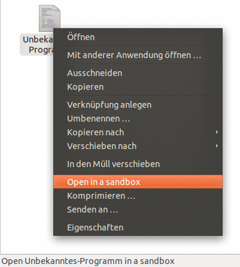
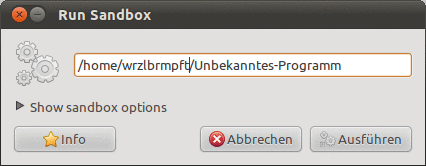
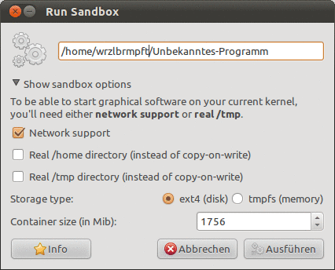

Arkose
Dieser Artikel wurde für die folgenden Ubuntu-Versionen getestet:
Dieser Artikel ist mit keiner aktuell unterstützten Ubuntu-Version getestet! Bitte diesen Artikel testen und das getestet-Tag entsprechend anpassen.
Zum Verständnis dieses Artikels sind folgende Seiten hilfreich:
Mit Arkose  von Stéphane Graber kann man Programme innerhalb einer Sandbox ausführen. Man kann festlegen, ob eine Anwendung das Netzwerk verwenden darf, wie sie auf das Benutzerverzeichnis zugreifen kann und wie viel Festplattenspeicherplatz sie verwenden kann. Arkose benutzt dabei die gleichen Virtualisierungstechniken des Kernels wie LXC. Durch die Verwendung von aufs sind Änderungen am Dateisystem nur in der Sandbox sichtbar.
von Stéphane Graber kann man Programme innerhalb einer Sandbox ausführen. Man kann festlegen, ob eine Anwendung das Netzwerk verwenden darf, wie sie auf das Benutzerverzeichnis zugreifen kann und wie viel Festplattenspeicherplatz sie verwenden kann. Arkose benutzt dabei die gleichen Virtualisierungstechniken des Kernels wie LXC. Durch die Verwendung von aufs sind Änderungen am Dateisystem nur in der Sandbox sichtbar.
Eine Alternative zu Arkose, dessen Entwicklung eingestellt wurde, kann das ebenfalls in den offiziellen Paketquellen enthaltene Programm Firejail sein.
Installation¶
Arkose kann bis Ubuntu 12.04 aus den offiziellen Paketquellen installiert werden [1]:
arkose (universe)
arkose-gui (universe, grafische Oberfläche)
arkose-nautilus (universe, Nautilus-Integration)
 mit apturl
mit apturl
Paketliste zum Kopieren:
sudo apt-get install arkose arkose-gui arkose-nautilus
sudo aptitude install arkose arkose-gui arkose-nautilus
Verwendung¶
Am einfachsten startet man ein Programm in einer Sandbox, indem man im Dateimanager Nautilus das gewünschte Programm auswählt und im Kontextmenu  "Open in a sandbox" auswählt.
"Open in a sandbox" auswählt.

Im Dialogfenster wählt man die Schaltfläche "Ausführen", um das Programm in der Sandbox zu starten.

Anschließend wird man nach dem Benutzerpasswort gefragt, weil zum Erstellen der Sandbox Root-Rechte [2] benötigt werden. Man kann Arkose auch direkt starten und das Eingabefeld selbst ausfüllen.
Einstellungen der Sandbox¶
Beim Programmstart kann man ein paar Einstellungen vornehmen, die Standardeinstellungen sind aber normalerweise ausreichend.

| Einstellungen | |
| Funktion | Beschreibung |
| Network support | Soll die Anwendung kein Zugriff auf das Netzwerk haben, kann man das Häkchen entfernen. |
| Real /home directory | Wird dieser Punkt ausgewählt, bleiben die Änderungen, die das Programm im Benutzerverzeichnis macht, beim Programmende erhalten. |
| Real /tmp directory | Wird dieser Punkt ausgewählt, bleiben die Änderungen, die das Programm in /tmp/ macht, beim Programmende erhalten. |
| Storage type | Wird hier tmpfs gewählt, werden die nur für das Programm sichtbaren Änderungen im Hauptspeicher gehalten, anstatt im Verzeichnis ~/.arkose/ auf der Festplatte. |
| Container size | Der maximale Speicherplatz für die Sandbox. |
Einschränkungen¶
Über Nautilus ist es nicht möglich Programme zu starten, die z.B. Leerzeichen oder Umlaute im Dateinamen haben; Programme mit Leerzeichen kann man überhaupt nicht starten.
Arkose ist dazu geeignet, ein einzelnes Programm in einer Sandbox auszuführen. Durch die Trennung vom restlichen System hat das Programm dann aber auch keinen Zugriff auf laufende Dienste wie D-Bus, das GNOME-Konfigurationssystem GConf, PolicyKit oder PulseAudio und funktioniert dadurch möglicherweise nur eingeschränkt oder gar nicht. Die Auswirkung kann dann sein, dass keine Töne wiedergegeben werden, Einstellungen nicht beachtet werden oder dass das Programm gar nicht erst startet.
Terminal¶
Um eine Sandbox im Terminal [3] zu starten, muss der Befehl mit Root-Rechten [2] ausgeführt werden:
sudo arkose OPTIONEN
| Optionen | |
| Einstellung | Beschreibung |
-c, --command | Ein Programm ausführen |
-h, --home | Die Änderungen im Benutzerverzeichnis bleiben erhalten |
-n, --network | Aktiviert das Netzwerk in der Sandbox |
-s, --size | Speicherplatz in MB (Standard ist 2 auf ext4 und 50% des RAM auf tmpfs) |
-t, --type | Speicherart, mögliche Werte sind ext4 (Standard) und tmpfs. |
-T, --tmp | Die Änderungen in /tmp/ bleiben erhalten. |
- Erstellt mit Inyoka
-
 2004 – 2017 ubuntuusers.de • Einige Rechte vorbehalten
2004 – 2017 ubuntuusers.de • Einige Rechte vorbehalten
Lizenz • Kontakt • Datenschutz • Impressum • Serverstatus -
Serverhousing gespendet von